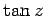
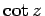

Inhalt Index DeskTop Bronstein

 Funktionentheorie Potenzreihenentwicklung analytischer Funktionen Isolierte singuläre Stellen und der Residuensatz
Funktionentheorie Potenzreihenentwicklung analytischer Funktionen Isolierte singuläre Stellen und der Residuensatz


Hat eine sonst holomorphe Funktion für endliche Werte von z nur Pole als singuläre Stellen, dann heißt sie meromorph. Eine meromorphe Funktion läßt sich immer als Quotient zweier analytischer Funktionen darstellen.
Beispiele für in der ganzen Ebene meromorphe Funktionen sind die rationalen Funktionen, die nur eine endliche Zahl von Polen besitzen, sowie solche transzendenten Funktionen wie  und .